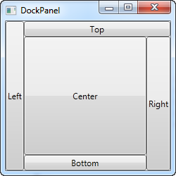
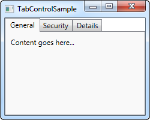

Table of Contents
- Table of Contents
- 🎨 Gestaltung von grafischen Benutzerinterfaces
- 🪟 WPF Anwendungen
- 🧱 WPF Basics
- 🌊 Animations & Media
- 🎯 Event Handling
- ✍️ XAML
- 📦 WPF Container
- 🧩 WPF Controls
- ☕ Java UI
- 🪟 WPF Anwendungen
🎨 Gestaltung von grafischen Benutzerinterfaces
🪟 WPF Anwendungen
Windows Presentation Foundation (WPF) is a free and open-source user interface framework for Windows-based desktop applications. WPF applications are based in .NET, and are primarily developed using C# and XAML.
Originally developed by Microsoft, WPF was initially released as part of .NET Framework 3.0 in 2006. In 2018, Microsoft released WPF as open source under the MIT License. WPF's design and its layout language XAML have been adopted by multiple other UI frameworks, such as UWP, .NET MAUI, and Avalonia.
🧱 WPF Basics
For MVVM see MMVM WPF Chapter
📦 Key Components
1. XAML (eXtensible Application Markup Language)
Used to define the UI declaratively.
<Window x:Class="MyApp.MainWindow"
xmlns="http://schemas.microsoft.com/winfx/2006/xaml/presentation"
Title="Hello WPF" Height="300" Width="400">
<Grid>
<Button Content="Click Me" Width="100" Height="30" Click="Button_Click"/>
</Grid>
</Window>
2. Code-Behind
C# code that runs logic behind the UI.
private void Button_Click(object sender, RoutedEventArgs e)
{
MessageBox.Show("Ahoy, Captain!");
}
🧠 Key Concepts
🎯 Data Binding
Linking UI elements to data sources (like objects or collections).
<TextBox Text="{Binding UserName}" />
📦 MVVM Pattern
Model-View-ViewModel is the standard design pattern in WPF.
- Model: Business logic/data
- View: XAML UI
- ViewModel: Middle layer for binding and commands
🎨 Styling and Templates
WPF supports custom styling using <Style> and templates for full control over UI appearance.
<Style TargetType="Button">
<Setter Property="Background" Value="DarkSlateBlue"/>
<Setter Property="Foreground" Value="White"/>
</Style>
⚙️ Dependency Properties
Used for advanced features like animation, styling, and binding.
public static readonly DependencyProperty MyProperty =
DependencyProperty.Register("My", typeof(string), typeof(MyClass));
🌊 Animations & Media
WPF supports powerful animation tools.
<Button Name="MyButton" Content="Animate Me">
<Button.Triggers>
<EventTrigger RoutedEvent="Button.Click">
<BeginStoryboard>
<Storyboard>
<DoubleAnimation Storyboard.TargetProperty="Width" To="300" Duration="0:0:1"/>
</Storyboard>
</BeginStoryboard>
</EventTrigger>
</Button.Triggers>
</Button>
🛠️ Common Controls
| Control | Purpose |
|---|---|
TextBox |
User text input |
Button |
Clickable action |
ListView |
Display a list of items |
ComboBox |
Dropdown selection |
Grid |
Layout control |
🚀 Getting Started
To build a WPF app:
- Use Visual Studio
- Create a WPF App (.NET) project
- Design UI in XAML
- Add logic in C#
🎯 Event Handling
Unlike traditional .NET event models, WPF introduces Routed Events, which traverse the visual tree using Routing Strategies.
(A routed event is a type of event that can invoke handlers on multiple listeners in an element tree rather than just the object that raised the event. It is basically a CLR event that is supported by an instance of the Routed Event class. It is registered with the WPF event system. RoutedEvents have three main routing strategies which are as follows)
🧭 Routing Strategies
-
Direct
- Like traditional .NET events. Only the source element raises and handles it.
-
Bubbling
- Event starts from the source and bubbles up through parent elements. (To topmost, usually a window)
-
Tunneling
- Event starts at the root and tunnels down to the source.
- event travels down the visual tree to all the children nodes until it reaches the element in which the event originated.
- Prefixed with
Preview(e.g.,PreviewMouseDown)
- Event starts at the root and tunnels down to the source.
In a WPF application, events are often implemented as a tunneling/bubbling pair. So, you'll have a preview MouseDown and then a MouseDown event.
🧪 Example: Tunneling vs Bubbling
<StackPanel PreviewMouseDown="OnPreviewMouseDown"
MouseDown="OnMouseDown">
<Button Content="Click Me"/>
</StackPanel>
private void OnPreviewMouseDown(object sender, MouseButtonEventArgs e)
{
Console.WriteLine("TUNNEL: StackPanel saw the click first.");
}
private void OnMouseDown(object sender, MouseButtonEventArgs e)
{
Console.WriteLine("BUBBLE: StackPanel saw the click after the Button.");
}
🌀 Flow:
PreviewMouseDownon StackPanel (tunnel)PreviewMouseDownon ButtonMouseDownon ButtonMouseDownon StackPanel (bubble)
📣 Raising Custom Routed Events
You can create your own events that participate in routing.
public static readonly RoutedEvent WarpInitiatedEvent = EventManager.RegisterRoutedEvent(
"WarpInitiated", RoutingStrategy.Bubble, typeof(RoutedEventHandler), typeof(ShipControl));
public event RoutedEventHandler WarpInitiated
{
add { AddHandler(WarpInitiatedEvent, value); }
remove { RemoveHandler(WarpInitiatedEvent, value); }
}
void RaiseWarp()
{
RoutedEventArgs args = new RoutedEventArgs(WarpInitiatedEvent);
RaiseEvent(args);
}
<local:ShipControl WarpInitiated="OnWarp"/>
🛑 Event Handling Options
1. e.Handled = true
Stops the routed event from traveling further.
private void Button_PreviewMouseDown(object sender, MouseButtonEventArgs e)
{
e.Handled = true; // Stops bubbling!
}
2. AddHandler with handledEventsToo
Listens even if the event was already handled.
button.AddHandler(Button.MouseDownEvent, new MouseButtonEventHandler(OnMouseDown), true);
🧪 RoutedCommand & InputGesture
Commanding system also uses routed events internally.
<Button Command="ApplicationCommands.Save" CommandTarget="{Binding ElementName=TextBox1}" />
CommandBindings.Add(new CommandBinding(ApplicationCommands.Save, OnSaveExecuted));
private void OnSaveExecuted(object sender, ExecutedRoutedEventArgs e)
{
// Save logic
}
You can also define your own:
public static RoutedCommand FireCannons = new RoutedCommand();
<Window.InputBindings>
<KeyBinding Key="F" Modifiers="Control" Command="{x:Static local:CustomCommands.FireCannons}" />
</Window.InputBindings>
🔧 Advanced Scenario: Routed Event for a Custom Control
public class HullButton : Button
{
public static readonly RoutedEvent HullBreachEvent = EventManager.RegisterRoutedEvent(
"HullBreach", RoutingStrategy.Bubble, typeof(RoutedEventHandler), typeof(HullButton));
public event RoutedEventHandler HullBreach
{
add => AddHandler(HullBreachEvent, value);
remove => RemoveHandler(HullBreachEvent, value);
}
protected override void OnClick()
{
RaiseEvent(new RoutedEventArgs(HullBreachEvent));
}
}
<local:HullButton HullBreach="OnHullBreachAlert"/>
🧰 Routed Events vs .NET Events
| Feature | Routed Events | .NET Events |
|---|---|---|
| Traversal | Yes (bubble/tunnel/direct) | No |
| Handled Control | Yes (e.Handled) |
No |
| Visual Tree Aware | Yes | No |
| Declarative in XAML | Yes | Partially |
📍 When to Use What
- Use Routed Events when the action involves UI interaction across nested controls.
- Use .NET events for backend or logic-level communication.
- Tunneling is great for intercepting or validation before the actual action (like blocking mouse input on children).
✍️ XAML
XAML (eXtensible Application Markup Language) is the declarative markup language used in WPF to define UI elements, layout, styles, and data bindings.
🛠️ Basic XAML Structure
<Window x:Class="MyApp.MainWindow"
xmlns="http://schemas.microsoft.com/winfx/2006/xaml/presentation"
Title="Main Window" Height="350" Width="525">
<Grid>
<TextBlock Text="Ahoy, Captain!" FontSize="20"/>
</Grid>
</Window>
xmlns: Defines namespaces for WPF controls.x:Class: Links the XAML to a C# code-behind file.- Elements are hierarchical — parent containers hold child elements.
📦 WPF Container
| Container | Description | Example |
|---|---|---|
| Grid | Most flexible; rows & columns layout | xml<br><Grid><Grid.RowDefinitions><RowDefinition/><RowDefinition/></Grid.RowDefinitions><Button Grid.Row="1" Content="Click"/></Grid> |
| StackPanel | Stacks children vertically or horizontally | xml<br><StackPanel Orientation="Vertical"><TextBlock Text="Hello"/><Button Content="Click"/></StackPanel> |
| DockPanel | Aligns elements to edges (Top, Bottom, etc.)  |
xml<br><DockPanel><Button DockPanel.Dock="Top" Content="Top"/></DockPanel> |
| WrapPanel | Wraps items like text wrapping | xml<br><WrapPanel><Button Content="1"/><Button Content="2"/></WrapPanel> |
| Canvas | Absolute positioning with X/Y | xml<br><Canvas><Button Canvas.Left="50" Canvas.Top="20" Content="Fly"/></Canvas> |
| UniformGrid | Evenly distributes cells in grid | xml<br><UniformGrid Rows="2" Columns="2"><Button Content="A"/><Button Content="B"/></UniformGrid> |
🧩 WPF Controls
| Control | Description | Example |
|---|---|---|
| TextBlock | Displays text (non-editable) | xml<br><TextBlock Text="Status: All green"/> |
| TextBox | Editable text input | xml<br><TextBox Text="Input here" Width="200"/> |
| Button | Clickable button | xml<br><Button Content="Fire Cannons" Click="OnFire"/> |
| Label | Text label, often paired with input | xml<br><Label Content="Username:"/> |
| CheckBox | Toggle true/false | xml<br><CheckBox Content="Enable Shield Boost"/> |
| RadioButton | Mutually exclusive options in group | xml<br><RadioButton GroupName="Mode" Content="Stealth"/> |
| ComboBox | Dropdown list | xml<br><ComboBox><ComboBoxItem Content="Option 1"/></ComboBox> |
| ListBox | List of selectable items | xml<br><ListBox><ListBoxItem Content="Item A"/></ListBox> |
| Image | Displays an image | xml<br><Image Source="Assets/logo.png" Width="100"/> |
| Slider | Numeric slider input | xml<br><Slider Minimum="0" Maximum="100" Value="50"/> |
| ProgressBar | Visual progress indicator | xml<br><ProgressBar Minimum="0" Maximum="100" Value="75"/> |
| TabControl | Tabs for multiple pages/views  |
xml<br><TabControl><TabItem Header="Nav"><TextBlock Text="Abyss Scan"/></TabItem></TabControl> |
☕ Java UI
🖼️ Java Swing
Java Swing is the long-standing, mature GUI toolkit for Java, built on top of AWT (Abstract Window Toolkit). It’s widely used for desktop applications with a rich set of widgets.
Key Points:
- Part of javax.swing package.
- Lightweight components (pure Java, not OS native).
- Uses MVC (Model-View-Controller) pattern internally.
- Supports pluggable look-and-feels (Metal, Nimbus, Windows style, etc.).
- Event-driven programming model with listeners.
- Threading: GUI operations must run on the Event Dispatch Thread (EDT) to avoid freezes.
Basic Structure:
import javax.swing.*;
public class SwingDemo {
public static void main(String[] args) {
SwingUtilities.invokeLater(() -> {
JFrame frame = new JFrame("Swing Example");
frame.setDefaultCloseOperation(JFrame.EXIT_ON_CLOSE);
JButton button = new JButton("Press me");
button.addActionListener(e -> System.out.println("Button pressed!"));
frame.add(button);
frame.setSize(300, 200);
frame.setVisible(true);
});
}
}
Layout Managers (crucial for UI layout):
BorderLayout— divides container into N, S, E, W, Center.FlowLayout— simple left-to-right flow.GridLayout— equal-sized grid cells.BoxLayout— vertical or horizontal stacking.GroupLayout— used in GUI builders, supports complex layouts.
Programming Basics - A Window to the World!
import javax.swing.JFrame;
public class HelloSwingFrame {
public static void main(String[] args) {
JFrame f = new JFrame("A Window to the World!");
f.setDefaultCloseOperation(JFrame.EXIT_ON_CLOSE);
f.setSize(300, 200);
f.setVisible(true);
}
}


Events
import java.awt.event.ActionEvent;
import java.awt.event.ActionListener;
import javax.swing.JButton;
import javax.swing.JFrame;
public class ExerciseActionListener implements ActionListener {
@Override
public void actionPerformed(ActionEvent arg0) {
System.out.println("You clicked: " + arg0.getActionCommand());
}
public static void main(String[] args) {
JFrame jf = new JFrame("The Window to the World!");
jf.setDefaultCloseOperation(JFrame.EXIT_ON_CLOSE);
JButton jb = new JButton("Click Me!");
jf.add(jb);
ExerciseActionListener eal = new ExerciseActionListener();
jb.addActionListener(eal);
jf.setSize(300, 200);
jf.pack();
jf.setVisible(true);
}
}
🌟 JavaFX
JavaFX is the modern, feature-rich Java UI toolkit designed to replace Swing for rich client apps.
Key Points:
- Part of javafx.* packages.
- Hardware-accelerated graphics via Prism engine.
- Uses FXML, an XML-based UI markup language similar to XAML.
- Supports property bindings and observable collections for reactive UIs.
- Scene graph-based architecture (tree of nodes representing UI elements).
- Built-in support for animations, effects, and media.
- Strong separation between UI (FXML) and logic (Controller classes).
- Supports CSS-like styling for UI elements.
Basic Structure:
import javafx.application.Application;
import javafx.scene.Scene;
import javafx.scene.control.Button;
import javafx.scene.layout.StackPane;
import javafx.stage.Stage;
public class FXDemo extends Application {
@Override
public void start(Stage primaryStage) {
Button btn = new Button("Press me");
btn.setOnAction(e -> System.out.println("Button pressed!"));
StackPane root = new StackPane(btn);
Scene scene = new Scene(root, 300, 200);
primaryStage.setTitle("JavaFX Example");
primaryStage.setScene(scene);
primaryStage.show();
}
public static void main(String[] args) {
launch(args);
}
}
Important JavaFX Concepts:
- Stage: The top-level window.
- Scene: The container for all content inside a Stage.
- Node: Base class for all scene graph elements (controls, shapes, groups).
- Properties & Bindings: Observable variables with automatic UI updates.
- FXML: UI description language, loadable with
FXMLLoader. - CSS Styling: Use CSS files to style nodes (e.g.,
.button { -fx-background-color: red; }).
Summary Table
| Feature | Java Swing | JavaFX |
|---|---|---|
| Released | 1997 | 2008 |
| UI Description | Java code only | Java code + FXML (XML markup) |
| Architecture | Lightweight components, MVC | Scene graph, reactive properties |
| Graphics | Software rendered (AWT-based) | Hardware accelerated (Prism) |
| Styling | Look & Feel | CSS-like styling |
| Animation/Media | Limited | Built-in rich support |
| Threading | Event Dispatch Thread (EDT) | JavaFX Application Thread |
| Learning Curve | Moderate | Moderate to advanced |